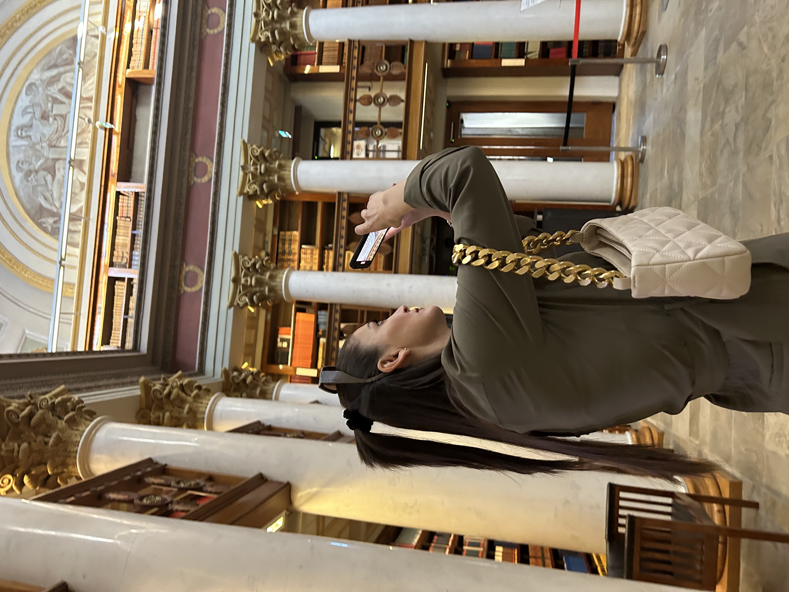
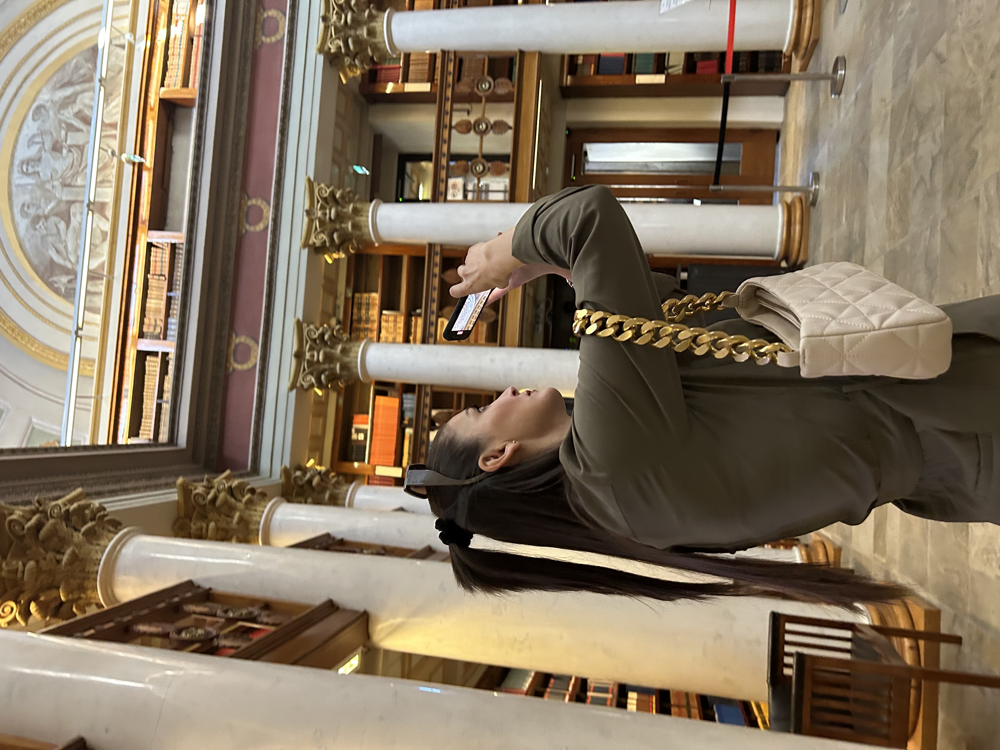

KUKA MINÄ OLEN?
Nimeni on Albulena Shabani, ja olen 22-vuotias nuori, joka on aina ollut utelias oppimaan uutta ja kehittämään itseään niin henkilökohtaisesti kuin ammatillisestikin. Kasvaminen ja oppiminen ovat minulle tärkeitä arvoja, ja pyrin aina ottamaan vastaan uusia haasteita, jotka auttavat minua kehittymään. Olen saanut paljon kokemusta erilaisista projekteista, ja jokainen uusi tilanne on opettanut minulle jotain uutta niin työelämässä kuin opiskelujen parissa. Olen erityisen kiinnostunut teknologiasta, viestinnästä ja luovista projekteista. Näiden kiinnostuksen kohteiden kautta olen kehittänyt taitojani monipuolisesti ja oppinut soveltamaan tietoa käytännössä. Uskon, että jatkuva oppiminen ja uteliaisuus ovat avainasemassa sekä ammatillisessa menestyksessä että henkilökohtaisessa kasvussa. Motivoituneisuus, vastuullisuus ja sopeutumiskyky ovat ominaisuuksia, joita pidän itsessäni vahvuuksina.
Työskentelen mielelläni sekä itsenäisesti että tiimissä, ja pidän siitä, että voin jakaa tietoa ja oppia muiden kokemuksista. Olen oppinut, että yhteistyö ja avoin kommunikaatio ovat avain tehokkaaseen työskentelyyn ja hyviin tuloksiin. Vapaa-ajallani nautin lukemisesta, matkustamisesta ja luovista projekteista. Harrastukseni antavat minulle energiaa, inspiraatiota ja luovuutta, jotka heijastuvat myös ammatillisiin tavoitteisiini. Uskon, että tasapaino työn, opiskelun ja vapaa-ajan välillä on tärkeää, jotta voi kehittyä kokonaisvaltaisesti ja saavuttaa omat päämääränsä.
Tavoitteenani on löytää ura, jossa voin hyödyntää vahvuuksiani, oppia uutta ja tuoda lisäarvoa ympärilläni oleville ihmisille. Olen sitoutunut tekemään parhaani jokaisessa projektissa ja tehtävässä, johon tartun, ja pyrin jatkuvasti kehittämään taitojani sekä laajentamaan näkökulmaani. Olen kiitollinen kaikista mahdollisuuksista, joita elämä on minulle tähän asti tarjonnut, ja odotan innolla tulevia haasteita ja kokemuksia. Uskon, että uteliaisuus, motivaatio ja jatkuva oppiminen vievät pitkälle, ja haluan jatkossakin kasvaa sekä ihmisenä että ammattilaisena.
“Uskon, että jatkuva oppiminen ja uteliaisuus vievät pitkälle.” - Albulena Shabani